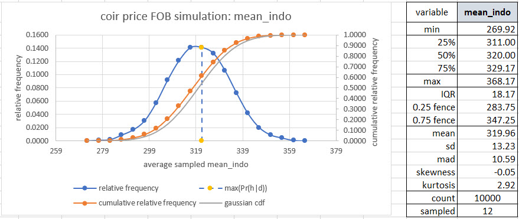
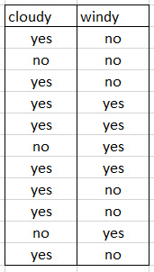
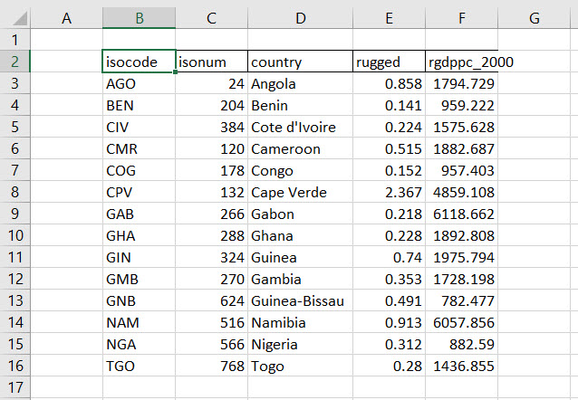

Chapter 12 The journey continues
12.1 Backing up
We continue to learn. At this point we are at the end of a portion of our journey, and at the beginning of a new segment. We review all of the most important aspects of our previous work. It is but a stepping stone to future efforts. Here is both a summary and a compendium of ways in which we approach probabilistic reasoning. The last segment will answer a question we asked before: does it matter?
In what follows we should try to answer the questions given our hard earned knowledge about probabilistic reasoning, and, perhaps, a peak at previous work. If we get too stymied, start beating bodily parts against immovable objects, then, we might press the button where all will be revealed.
12.2 Fences and neighbors
We built two fence analyses, each with lower and upper bounds. Both use some aspect of all of the probability we have strived so hard to learn.
Tukey’ Outliers. Here we used raw percentiles, calculated a scale, a range, from 25% to 75% and called it an Interquartile Range (IQR). Using this as our measure of how wide the data seems to be we construct upper and lower bounds. Any data beyond those bounds we label outliers.
Credibility Intervals. These are really probability intervals, even more correctly, intervals within which we are probably sure that the data is compatible with our model of the data. The model of the data we bury in hypothetical data called conjectures. We parameterize those conjectures with means and standard deviations (Gaussian – so-called normal), arrival rates (Poisson), proportions (binomial). We still get upper and lower bounds.
Let’s use this set of visual and tabular results about coir prices, FOB Indonesia, from week 10.

Even though we ran 10,000 draws from the coir price urn, we sampled only 12 prices at a time.
12.2.1 Tukey’s fences.
Construct Tukey’s fences. What outliers can we detect in this data (if any).
12.2.2 Credibility intervals.
Construct 89% credibility intervals using the information in this figure. What are the 89% lower and upper bounds for coir prices?
12.3 Binomial raptors.
Raptors are particularly good indicators of environmental health because they inhabit most ecosystem types, occupy large home ranges, feed at the top of the food web, and are highly sensitive to chemical contamination and other human disturbance. They are also easy to tally when they congregate during migration. That’s why we are standing in the wind, on cloudy and clear days, nearly every day of the year here on the Heldeberg Escarpment (42°39′21″N 74°01′09″W) southwest of Albany, NY in the John Boyd Thacher State Park. We have a clear view of the confluence of the Mohawk and Hudson Rivers and their watersheds.
12.3.1 Cloudy or clear.
Here is data on weather for several recent days of raptor sightings (mostly broad-winged hawks, but there are some turkey vultures out there – so we hear) during an annual migration.

How much more likely is it to be cloudy if it is windy?
12.3.2 Binomial sightings.
Some one of us is standing at the edge of the escarpment. The observer looks up. What is the probability of seeing a raptor and how plausible is this claim? What is the proportion of times the observer will sight a raptor once, and what is the probability that this claim is true? Same question, put differently. Suppose the observer looks up six (6) times and sights raptors twice (2). We will use a grid of five (5) equally spaced proportions. We will assume that each conjecture is equally probably.
12.3.3 Poisson raptors.
Cloudy, windy, craning the neck with binoculars into the wide horizon of the sky – but what is the average number of sightings on a given day? We observe sightings of 20, 18, 14, and 10 on four days. To answer this question we will assume a 5 node grid with minimum of 9 and maximum of 21 for hypothesized average sightings. Each conjecture is equally likely.
12.3.4 Poisson expectations.
Given our analysis in the previous question, how many sightings might we expect in excess of the average most likely sighting?
12.4 Managing relationships
Our sights roam to just the African continent countries bordering the Bay of Guinea. We focus on this area because they share a more common geography, oceanography, and geological evolution. They also have in common the transmigration of enslaved people across the Atlantic to the Western Hemisphere over several centuries. Here is the data.

We built two models of relationships.
Waiting time. But that was also coffee and bees! It could have been pre- and post-launch of IGAUNOGOHOME. It could be snowing or not snowing. It could be cloudy and windy. It is the basic model of an intervention. Does the intervention matter?
Education matters. This model is the expectational version of the regression model. We try to understand how the expectation of a variable, wages, can be explained, predicted or simply how it is dependent on education.
Here we use some new data about African continent country gross domestic product per capita and a measure of terrain ruggedness. We ask does terrain matter to the development of the wealth of a nation? If it does, to what extent?
12.4.1 Drawing the line
What is the average impact of the ruggedness index on gross domestic product per capita?
12.4.2 Does it matter?
Some might insist that ruggedness has nothing to do with prosperity. Maybe so. What is the uncertainty we face if we believe that ruggedness accounts, in some part, for the propsperity of a particular country? Let that country be Cameroon. What is the probability that we decide that ruggedness does influence Cameroon’s gross domestic product per capita, but in reality, not our mind, it really does not?